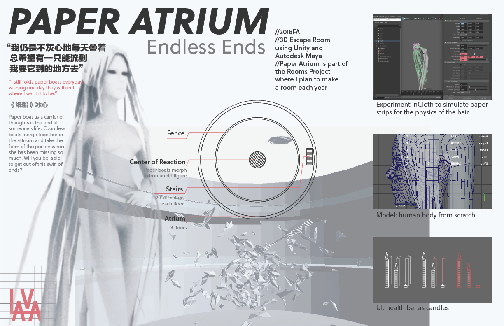
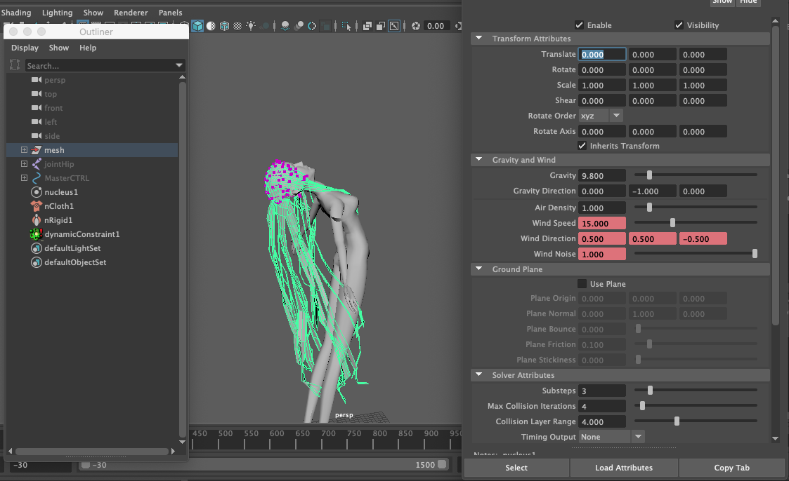
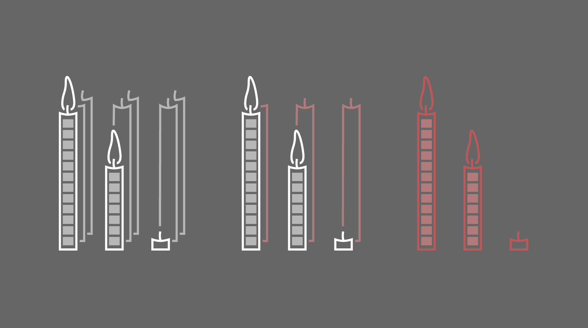

PAPER ATRIUM
"I still folds paper boats everyday, wishing one day it will drift where I want it to be."
♦ Concept
The experience is realiized in Unity.
♦ Character
Original character which represents the incarnation of accumulated words of remembrance, modeled and animated in Maya. The hair is simulated with nCloth function on multi-triangular surface to produce a feeling of origami (folded paper) floating in breeze.
♦ UI
Many East Asian cultures tradionally believe that the soul of a dead person will revisit its home and body 7 days after its death. The minimalistic UI which calculates the remaining time is mapped to the groups of candles burning down.
